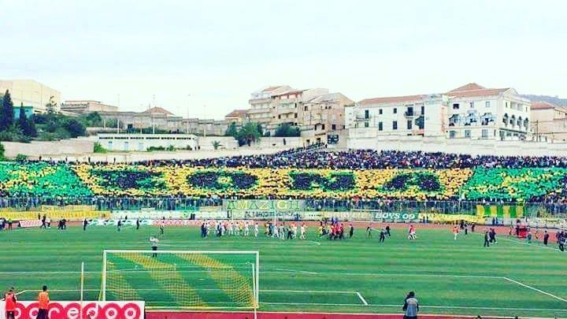
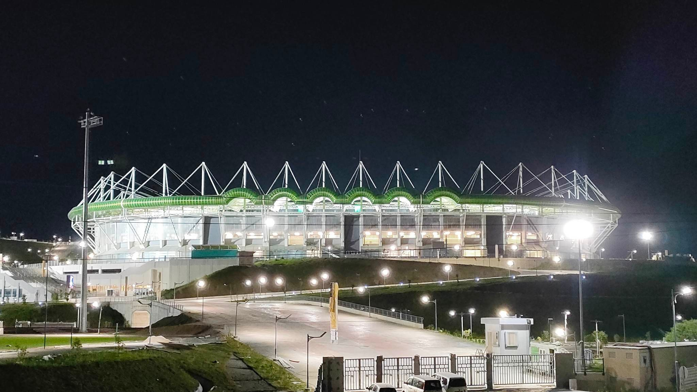
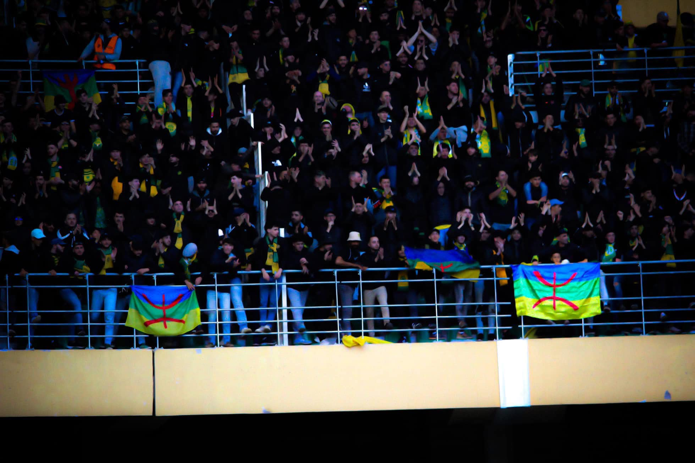

The Heartbeat of Kabylie: Our Fans
JS Kabylie is not just a club—it’s a movement, a way of life.From every corner in Algeria, JSK supporters breathe football with an unmatched passion.
The Supporters
The heart and soul of our club, the ones who stand through the storms and shine in the triumphs, the ones who never waver, never falter, never surrender. The ones who travel miles, who paint the stands in passion, who live and bleed for this crest. The ones who raise their voices even when the world tries to silence them. To those who have given everything, who have risked it all, who have fought for these sacred colors—this is more than football, more than a club. This is identity, this is pride, this is legacy. The Kabyle people don’t just wear these colors—we are these colors.
Our Staduim
The Hocine Ait Ahmed is more than a football ground; It's what the fans desvered, after years of waiting our bastion is finally open even if they tried many times to steal it away or stop its construction, we as fans are greatful for what our great president peace be put on his name Hannachi fought fought for.
The Berber cluture
The Zona Amazigh breathes music—it’s what transforms the stadium into a fortress of passion. The chants in our mother tongue are more than just songs; they are a declaration of our identity, a tribute to our roots, and a symbol of resistance and pride. Every matchday, we proudly raise the Amazigh flag high, a reminder that our culture, language, and traditions stand above everything. The colors of our flag wave not just as a symbol, but as a message to the world—our identity is alive, strong, and unshakable. We encourage every supporter to embrace this spirit, to sing in the stands in our native language, and to give everything for the atmosphere. Let your voice carry the echoes of our ancestors, let your energy fuel the team, and let our presence in the stadium be a reflection of who we are. More than just a support group, we are the heartbeat of a culture, and together, we make history.